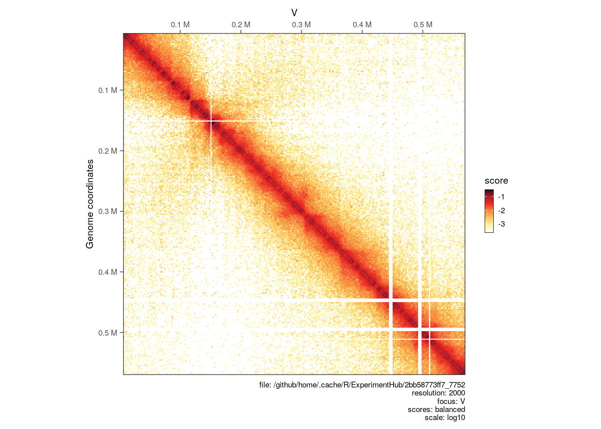
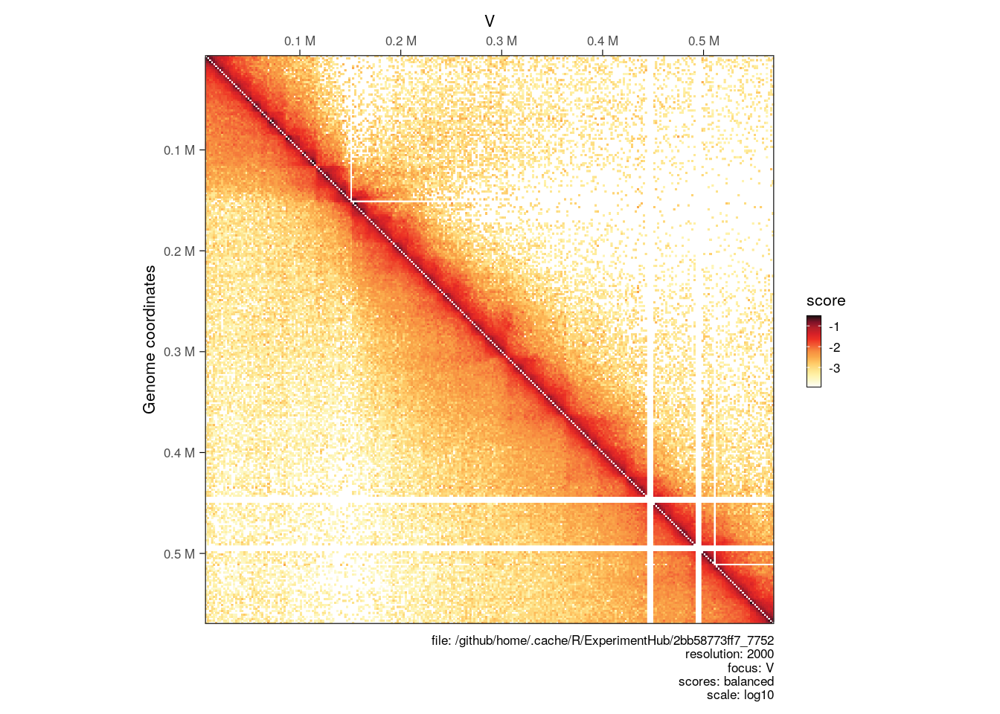
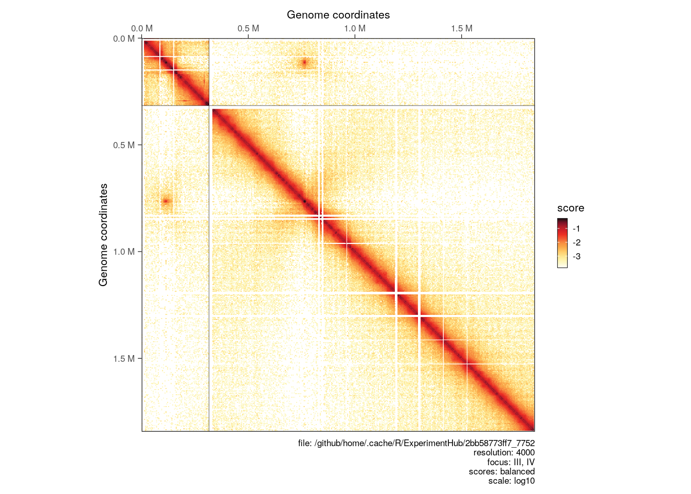
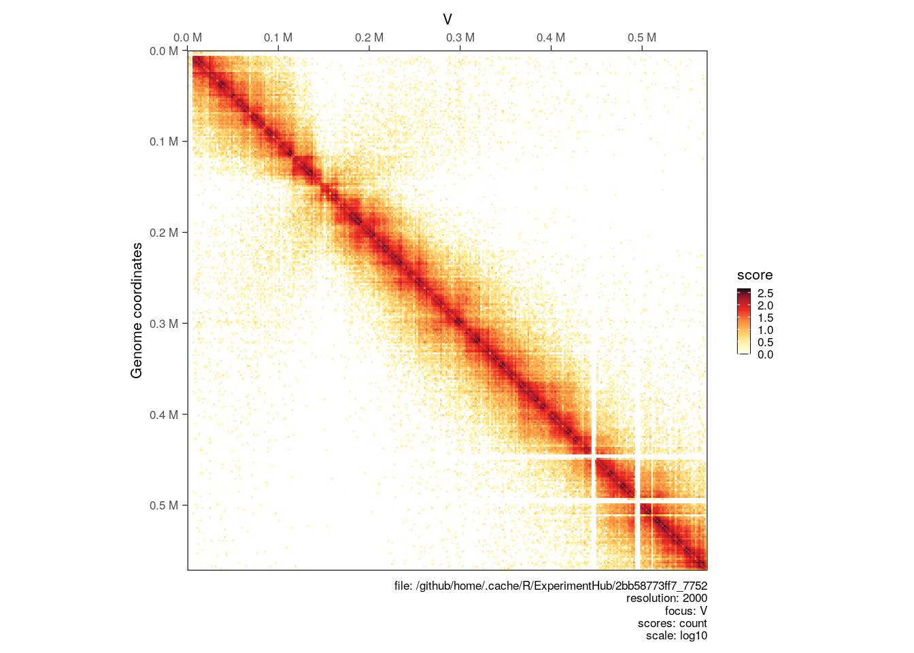
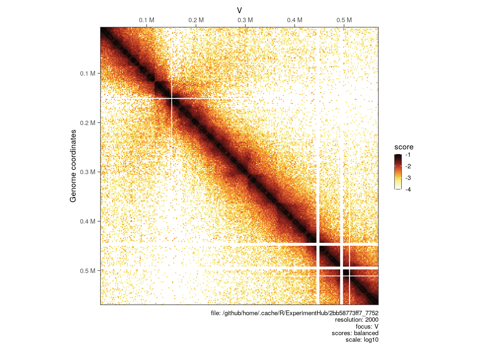

library(HiCExperiment)
library(HiContactsData)
# ---- This downloads an example `.mcool` file and caches it locally
coolf <- HiContactsData('yeast_wt', 'mcool')
## see ?HiContactsData and browseVignettes('HiContactsData') for documentation
## loading from cache
# ---- This creates a connection to the disk-stored `.mcool` file
cf <- CoolFile(coolf)
cf
## CoolFile object
## .mcool file: /github/home/.cache/R/ExperimentHub/2bb58773ff7_7752
## resolution: 1000
## pairs file:
## metadata(0):
# ---- This imports contacts from the chromosome `V` at resolution `2000`
hic <- import(cf, focus = 'V', resolution = 2000)3 Visualizing Hi-C data in R
Generating the example
hic object 👇
To demonstrate how to visualize a HiCExperiment contact matrix, we will create an HiCExperiment object from an example .cool file provided in the HiContactsData package.
hic
## `HiCExperiment` object with 303,545 contacts over 289 regions
## -------
## fileName: "/github/home/.cache/R/ExperimentHub/2bb58773ff7_7752"
## focus: "V"
## resolutions(5): 1000 2000 4000 8000 16000
## active resolution: 2000
## interactions: 20177
## scores(2): count balanced
## topologicalFeatures: compartments(0) borders(0) loops(0) viewpoints(0)
## pairsFile: N/A
## metadata(0):3.1 Visualizing Hi-C contact maps
3.1.1 Square matrices
library(HiContacts)
plotMatrix(hic)
3.1.2 Side-by-side matrices
hic2 <- import(
CoolFile(HiContactsData('yeast_eco1', 'mcool')),
focus = 'V',
resolution = 2000
)
## see ?HiContactsData and browseVignettes('HiContactsData') for documentation
## downloading 1 resources
## retrieving 1 resource
## loading from cache
plotMatrix(hic, compare.to = hic2)
3.1.3 Plotting multiple chromosomes
full_hic <- import(cf, resolution = 4000)
hic_subset <- full_hic[c("III", "IV")]
plotMatrix(hic_subset)
3.2 Tuning Hi-C contact maps
3.2.1 Choosing scores
plotMatrix(hic, use.scores = 'count')
3.2.2 Choosing scale
plotMatrix(hic, limits = c(-3.5, -1))3.2.3 Choosing color map
# ----- `afmhotr` color map is shipped in the `HiContacts` package
afmhotrColors()
## [1] "#ffffff" "#f8f5c3" "#f4ee8d" "#f6be35" "#ee7d32" "#c44228" "#821d19"
## [8] "#381211" "#050606"
plotMatrix(
hic,
use.scores = 'balanced',
limits = c(-4, -1),
cmap = afmhotrColors()
)
3.3 Read more
Read the following sections from the OHCA book:
Session info
Click to expand 👇
sessioninfo::session_info(
installed.packages()[,"Package"],
include_base = TRUE
)
## ─ Session info ────────────────────────────────────────────────────────────
## setting value
## version R version 4.3.0 (2023-04-21)
## os Ubuntu 22.04.2 LTS
## system x86_64, linux-gnu
## ui X11
## language (EN)
## collate en_US.UTF-8
## ctype en_US.UTF-8
## tz Etc/UTC
## date 2023-08-16
## pandoc 2.19.2 @ /usr/local/bin/ (via rmarkdown)
##
## ─ Packages ────────────────────────────────────────────────────────────────
## ! package * version date (UTC) lib source
## abind 1.4-5 2016-07-21 [1] RSPM
## aggregation 1.0.1 2018-01-25 [1] RSPM
## AnnotationDbi 1.62.2 2023-07-02 [1] Bioconductor
## AnnotationFilter 1.24.0 2023-04-25 [1] Bioconductor
## AnnotationHub * 3.8.0 2023-04-25 [1] Bioconductor
## askpass 1.1 2019-01-13 [1] RSPM (R 4.3.0)
## available 1.1.0 2022-07-10 [1] RSPM
## backports 1.4.1 2021-12-13 [1] RSPM
## base * 4.3.0 2023-04-26 [2] local
## base64enc 0.1-3 2015-07-28 [1] RSPM (R 4.3.0)
## basilisk 1.12.1 2023-06-30 [1] Bioconductor
## basilisk.utils 1.12.1 2023-05-19 [1] Bioconductor
## beeswarm 0.4.0 2021-06-01 [1] RSPM
## BH 1.81.0-1 2023-01-22 [1] RSPM
## Biobase 2.60.0 2023-04-25 [1] Bioconductor
## BiocBook 0.99.0 2023-08-16 [1] Github (js2264/BiocBook@c00d609)
## BiocBook.OHCA.Bioc2023 0.99.0 2023-08-16 [1] local
## BiocFileCache * 2.8.0 2023-04-25 [1] Bioconductor
## BiocGenerics * 0.46.0 2023-04-25 [1] Bioconductor
## BiocIO 1.10.0 2023-04-25 [1] Bioconductor
## BiocManager 1.30.20 2023-02-24 [1] CRAN (R 4.3.0)
## BiocParallel 1.34.2 2023-05-22 [1] Bioconductor
## BiocStyle 2.28.0 2023-04-25 [1] Bioconductor
## BiocVersion 3.17.1 2022-11-04 [1] Bioconductor
## biomaRt 2.56.1 2023-06-09 [1] Bioconductor
## Biostrings 2.68.1 2023-05-16 [1] Bioconductor
## biovizBase 1.48.0 2023-04-25 [1] Bioconductor
## bit 4.0.5 2022-11-15 [1] RSPM
## bit64 4.0.5 2020-08-30 [1] RSPM
## bitops 1.0-7 2021-04-24 [1] RSPM
## blob 1.2.4 2023-03-17 [1] RSPM
## bookdown 0.35 2023-08-09 [1] RSPM
## boot 1.3-28.1 2022-11-22 [2] CRAN (R 4.3.0)
## brew 1.0-8 2022-09-29 [1] RSPM (R 4.3.0)
## brio 1.1.3 2021-11-30 [1] RSPM (R 4.3.0)
## BSgenome 1.68.0 2023-04-25 [1] Bioconductor
## BSgenome.Hsapiens.UCSC.hg38 1.4.5 2023-08-16 [1] Bioconductor
## BSgenome.Scerevisiae.UCSC.sacCer3 1.4.0 2023-08-16 [1] Bioconductor
## bslib 0.4.2 2022-12-16 [1] RSPM (R 4.3.0)
## cachem 1.0.7 2023-02-24 [1] RSPM (R 4.3.0)
## Cairo 1.6-0 2022-07-05 [1] RSPM
## calibrate 1.7.7 2020-06-19 [1] RSPM
## callr 3.7.3 2022-11-02 [1] RSPM (R 4.3.0)
## checkmate 2.2.0 2023-04-27 [1] RSPM
## class 7.3-21 2023-01-23 [2] CRAN (R 4.3.0)
## cli 3.6.1 2023-03-23 [1] RSPM (R 4.3.0)
## clipr 0.8.0 2022-02-22 [1] RSPM (R 4.3.0)
## clisymbols 1.2.0 2017-05-21 [1] RSPM
## cluster 2.1.4 2022-08-22 [2] CRAN (R 4.3.0)
## CodeDepends 0.6.5 2018-07-17 [1] RSPM
## codetools 0.2-19 2023-02-01 [2] CRAN (R 4.3.0)
## colorspace 2.1-0 2023-01-23 [1] RSPM
## commonmark 1.9.0 2023-03-17 [1] RSPM (R 4.3.0)
## compiler 4.3.0 2023-04-26 [2] local
## cowplot 1.1.1 2020-12-30 [1] RSPM
## cpp11 0.4.3 2022-10-12 [1] RSPM (R 4.3.0)
## crayon 1.5.2 2022-09-29 [1] RSPM (R 4.3.0)
## credentials 1.3.2 2021-11-29 [1] RSPM (R 4.3.0)
## crosstalk 1.2.0 2021-11-04 [1] RSPM
## curl 5.0.0 2023-01-12 [1] RSPM (R 4.3.0)
## data.table 1.14.8 2023-02-17 [1] RSPM
## datasets * 4.3.0 2023-04-26 [2] local
## DBI 1.1.3 2022-06-18 [1] RSPM
## dbplyr * 2.3.3 2023-07-07 [1] RSPM
## DelayedArray 0.26.7 2023-07-28 [1] Bioconductor
## deldir 1.0-9 2023-05-17 [1] RSPM
## desc 1.4.2 2022-09-08 [1] RSPM (R 4.3.0)
## devtools 2.4.5 2022-10-11 [1] RSPM (R 4.3.0)
## dichromat 2.0-0.1 2022-05-02 [1] RSPM
## diffobj 0.3.5 2021-10-05 [1] RSPM (R 4.3.0)
## digest 0.6.31 2022-12-11 [1] RSPM (R 4.3.0)
## dir.expiry 1.8.0 2023-04-25 [1] Bioconductor
## docopt 0.7.1 2020-06-24 [1] RSPM (R 4.3.0)
## doParallel 1.0.17 2022-02-07 [1] RSPM
## downlit 0.4.2 2022-07-05 [1] RSPM (R 4.3.0)
## dplyr 1.1.2 2023-04-20 [1] RSPM
## DT 0.28 2023-05-18 [1] RSPM
## dynamicTreeCut 1.63-1 2016-03-11 [1] RSPM
## edgeR 3.42.4 2023-05-31 [1] Bioconductor
## ellipsis 0.3.2 2021-04-29 [1] RSPM (R 4.3.0)
## ensembldb 2.24.0 2023-04-25 [1] Bioconductor
## evaluate 0.20 2023-01-17 [1] RSPM (R 4.3.0)
## ExperimentHub * 2.8.1 2023-07-12 [1] Bioconductor
## fansi 1.0.4 2023-01-22 [1] RSPM (R 4.3.0)
## farver 2.1.1 2022-07-06 [1] RSPM
## fastcluster 1.2.3 2021-05-24 [1] RSPM
## fastmap 1.1.1 2023-02-24 [1] RSPM (R 4.3.0)
## filelock 1.0.2 2018-10-05 [1] RSPM
## fontawesome 0.5.1 2023-04-18 [1] RSPM (R 4.3.0)
## forcats 1.0.0 2023-01-29 [1] RSPM
## foreach 1.5.2 2022-02-02 [1] RSPM
## foreign 0.8-84 2022-12-06 [2] CRAN (R 4.3.0)
## formatR 1.14 2023-01-17 [1] RSPM
## Formula 1.2-5 2023-02-24 [1] RSPM
## fs 1.6.2 2023-04-25 [1] RSPM (R 4.3.0)
## futile.logger 1.4.3 2016-07-10 [1] RSPM
## futile.options 1.0.1 2018-04-20 [1] RSPM
## generics 0.1.3 2022-07-05 [1] RSPM
## GenomeInfoDb 1.36.1 2023-06-21 [1] Bioconductor
## GenomeInfoDbData 1.2.10 2023-08-16 [1] Bioconductor
## GenomicAlignments 1.36.0 2023-04-25 [1] Bioconductor
## GenomicFeatures 1.52.1 2023-06-22 [1] Bioconductor
## GenomicRanges 1.52.0 2023-04-25 [1] Bioconductor
## gert 1.9.2 2022-12-05 [1] RSPM (R 4.3.0)
## GGally 2.1.2 2021-06-21 [1] RSPM
## ggbeeswarm 0.7.2 2023-04-29 [1] RSPM
## ggbio 1.48.0 2023-04-25 [1] Bioconductor
## ggplot2 3.4.3 2023-08-14 [1] RSPM
## ggrastr 1.0.2 2023-06-01 [1] RSPM
## gh 1.4.0 2023-02-22 [1] RSPM (R 4.3.0)
## gitcreds 0.1.2 2022-09-08 [1] RSPM (R 4.3.0)
## glue 1.6.2 2022-02-24 [1] RSPM (R 4.3.0)
## GO.db 3.17.0 2023-08-16 [1] Bioconductor
## GOTHiC 1.36.0 2023-04-25 [1] Bioconductor
## graph 1.78.0 2023-04-25 [1] Bioconductor
## graphics * 4.3.0 2023-04-26 [2] local
## grDevices * 4.3.0 2023-04-26 [2] local
## grid 4.3.0 2023-04-26 [2] local
## gridExtra 2.3 2017-09-09 [1] RSPM
## gtable 0.3.3 2023-03-21 [1] RSPM
## gtools 3.9.4 2022-11-27 [1] RSPM
## here 1.0.1 2020-12-13 [1] RSPM
## HiCcompare 1.22.1 2023-06-04 [1] Bioconductor
## HiCExperiment * 1.0.0 2023-04-25 [1] Bioconductor
## HiContacts * 1.2.0 2023-04-25 [1] Bioconductor
## HiContactsData * 1.2.0 2023-04-27 [1] Bioconductor
## HiCool 1.0.0 2023-04-25 [1] Bioconductor
## hicrep 1.12.2 2023-08-16 [1] Github (TaoYang-dev/hicrep@e485dfa)
## highr 0.10 2022-12-22 [1] RSPM (R 4.3.0)
## Hmisc 5.1-0 2023-05-08 [1] RSPM
## hms 1.1.3 2023-03-21 [1] RSPM
## htmlTable 2.4.1 2022-07-07 [1] RSPM
## htmltools 0.5.5 2023-03-23 [1] RSPM (R 4.3.0)
## htmlwidgets 1.6.2 2023-03-17 [1] RSPM (R 4.3.0)
## httpuv 1.6.9 2023-02-14 [1] RSPM (R 4.3.0)
## httr 1.4.5 2023-02-24 [1] RSPM (R 4.3.0)
## httr2 0.2.2 2022-09-25 [1] RSPM (R 4.3.0)
## hwriter 1.3.2.1 2022-04-08 [1] RSPM
## impute 1.74.1 2023-05-02 [1] Bioconductor
## ini 0.3.1 2018-05-20 [1] RSPM (R 4.3.0)
## InteractionSet 1.28.1 2023-06-14 [1] Bioconductor
## interactiveDisplayBase 1.38.0 2023-04-25 [1] Bioconductor
## interp 1.1-4 2023-03-31 [1] RSPM
## IRanges 2.34.1 2023-06-22 [1] Bioconductor
## isoband 0.2.7 2022-12-20 [1] RSPM
## iterators 1.0.14 2022-02-05 [1] RSPM
## janeaustenr 1.0.0 2022-08-26 [1] RSPM
## jpeg 0.1-10 2022-11-29 [1] RSPM
## jquerylib 0.1.4 2021-04-26 [1] RSPM (R 4.3.0)
## jsonlite 1.8.4 2022-12-06 [1] RSPM (R 4.3.0)
## KEGGREST 1.40.0 2023-04-25 [1] Bioconductor
## KernSmooth 2.23-20 2021-05-03 [2] CRAN (R 4.3.0)
## knitr 1.42 2023-01-25 [1] RSPM (R 4.3.0)
## labeling 0.4.2 2020-10-20 [1] RSPM
## lambda.r 1.2.4 2019-09-18 [1] RSPM
## later 1.3.0 2021-08-18 [1] RSPM (R 4.3.0)
## lattice 0.21-8 2023-04-05 [2] CRAN (R 4.3.0)
## latticeExtra 0.6-30 2022-07-04 [1] RSPM
## lazyeval 0.2.2 2019-03-15 [1] RSPM
## lifecycle 1.0.3 2022-10-07 [1] RSPM (R 4.3.0)
## limma 3.56.2 2023-06-04 [1] Bioconductor
## littler 0.3.18 2023-03-26 [1] RSPM (R 4.3.0)
## locfit 1.5-9.8 2023-06-11 [1] RSPM
## magrittr 2.0.3 2022-03-30 [1] RSPM (R 4.3.0)
## MASS 7.3-59 2023-04-21 [2] RSPM (R 4.3.0)
## Matrix 1.5-4 2023-04-04 [2] CRAN (R 4.3.0)
## MatrixGenerics 1.12.3 2023-07-30 [1] Bioconductor
## matrixStats 1.0.0 2023-06-02 [1] RSPM
## memoise 2.0.1 2021-11-26 [1] RSPM (R 4.3.0)
## methods * 4.3.0 2023-04-26 [2] local
## mgcv 1.8-42 2023-03-02 [2] CRAN (R 4.3.0)
## mime 0.12 2021-09-28 [1] RSPM (R 4.3.0)
## miniUI 0.1.1.1 2018-05-18 [1] RSPM (R 4.3.0)
## multiHiCcompare 1.18.1 2023-07-02 [1] Bioconductor
## munsell 0.5.0 2018-06-12 [1] RSPM
## nlme 3.1-162 2023-01-31 [2] CRAN (R 4.3.0)
## nnet 7.3-18 2022-09-28 [2] CRAN (R 4.3.0)
## openssl 2.0.6 2023-03-09 [1] RSPM (R 4.3.0)
## OrganismDbi 1.42.0 2023-04-25 [1] Bioconductor
## packrat 0.9.1 2023-02-27 [1] RSPM
## pak 0.5.1.9000 2023-08-02 [1] local
## parallel 4.3.0 2023-04-26 [2] local
## patchwork 1.1.3 2023-08-14 [1] RSPM
## pbapply 1.7-2 2023-06-27 [1] RSPM
## pheatmap 1.0.12 2019-01-04 [1] RSPM
## pillar 1.9.0 2023-03-22 [1] RSPM (R 4.3.0)
## pkgbuild 1.4.0 2022-11-27 [1] RSPM (R 4.3.0)
## pkgconfig 2.0.3 2019-09-22 [1] RSPM (R 4.3.0)
## pkgdown 2.0.7 2022-12-14 [1] RSPM (R 4.3.0)
## pkgload 1.3.2 2022-11-16 [1] RSPM (R 4.3.0)
## R plogr <NA> <NA> [?] <NA>
## plotly 4.10.2 2023-06-03 [1] RSPM
## plyr 1.8.8 2022-11-11 [1] RSPM
## png 0.1-8 2022-11-29 [1] RSPM
## praise 1.0.0 2015-08-11 [1] RSPM (R 4.3.0)
## preprocessCore 1.62.1 2023-05-02 [1] Bioconductor
## prettyunits 1.1.1 2020-01-24 [1] RSPM (R 4.3.0)
## processx 3.8.1 2023-04-18 [1] RSPM (R 4.3.0)
## profvis 0.3.7 2020-11-02 [1] RSPM (R 4.3.0)
## progress 1.2.2 2019-05-16 [1] RSPM
## promises 1.2.0.1 2021-02-11 [1] RSPM (R 4.3.0)
## ProtGenerics 1.32.0 2023-04-25 [1] Bioconductor
## ps 1.7.5 2023-04-18 [1] RSPM (R 4.3.0)
## purrr 1.0.1 2023-01-10 [1] RSPM (R 4.3.0)
## qqman 0.1.8 2021-04-19 [1] RSPM
## quarto 1.2 2022-07-06 [1] RSPM
## R6 2.5.1 2021-08-19 [1] RSPM (R 4.3.0)
## ragg 1.2.5 2023-01-12 [1] RSPM (R 4.3.0)
## rappdirs 0.3.3 2021-01-31 [1] RSPM (R 4.3.0)
## RBGL 1.76.0 2023-04-25 [1] Bioconductor
## rcmdcheck 1.4.0 2021-09-27 [1] RSPM (R 4.3.0)
## RColorBrewer 1.1-3 2022-04-03 [1] RSPM
## Rcpp 1.0.10 2023-01-22 [1] RSPM (R 4.3.0)
## R RcppArmadillo <NA> <NA> [?] <NA>
## R RcppEigen <NA> <NA> [?] <NA>
## R RcppGSL <NA> <NA> [?] <NA>
## RcppTOML 0.2.2 2023-01-29 [1] RSPM
## RcppZiggurat 0.1.6 2020-10-20 [1] RSPM
## RCurl 1.98-1.12 2023-03-27 [1] RSPM
## readr 2.1.4 2023-02-10 [1] RSPM
## rebook 1.10.1 2023-05-25 [1] Bioconductor
## rematch2 2.1.2 2020-05-01 [1] RSPM (R 4.3.0)
## remotes 2.4.2 2021-11-30 [1] RSPM (R 4.3.0)
## renv 1.0.1 2023-08-10 [1] RSPM
## reshape 0.8.9 2022-04-12 [1] RSPM
## reshape2 1.4.4 2020-04-09 [1] RSPM
## restfulr 0.0.15 2022-06-16 [1] RSPM
## reticulate 1.31 2023-08-10 [1] RSPM
## Rfast 2.0.8 2023-07-03 [1] RSPM
## rhdf5 2.44.0 2023-04-25 [1] Bioconductor
## rhdf5filters 1.12.1 2023-04-30 [1] Bioconductor
## Rhdf5lib 1.22.0 2023-04-25 [1] Bioconductor
## Rhtslib 2.2.0 2023-04-25 [1] Bioconductor
## rjson 0.2.21 2022-01-09 [1] RSPM
## rlang 1.1.1 2023-04-28 [1] RSPM (R 4.3.0)
## rmarkdown 2.21 2023-03-26 [1] RSPM (R 4.3.0)
## rmdformats 1.0.4 2022-05-17 [1] RSPM
## roxygen2 7.2.3 2022-12-08 [1] RSPM (R 4.3.0)
## rpart 4.1.19 2022-10-21 [2] CRAN (R 4.3.0)
## rprojroot 2.0.3 2022-04-02 [1] RSPM (R 4.3.0)
## Rsamtools 2.16.0 2023-04-25 [1] Bioconductor
## rsconnect 1.0.1 2023-07-20 [1] RSPM
## RSpectra 0.16-1 2022-04-24 [1] RSPM
## RSQLite 2.3.1 2023-04-03 [1] RSPM
## rstudioapi 0.14 2022-08-22 [1] RSPM (R 4.3.0)
## rtracklayer 1.60.0 2023-04-25 [1] Bioconductor
## rversions 2.1.2 2022-08-31 [1] RSPM (R 4.3.0)
## S4Arrays 1.0.5 2023-07-24 [1] Bioconductor
## S4Vectors 0.38.1 2023-05-02 [1] Bioconductor
## sass 0.4.5 2023-01-24 [1] RSPM (R 4.3.0)
## scales 1.2.1 2022-08-20 [1] RSPM
## sessioninfo 1.2.2 2021-12-06 [1] RSPM (R 4.3.0)
## shiny 1.7.4 2022-12-15 [1] RSPM (R 4.3.0)
## ShortRead 1.58.0 2023-04-25 [1] Bioconductor
## snow 0.4-4 2021-10-27 [1] RSPM
## SnowballC 0.7.1 2023-04-25 [1] RSPM
## sourcetools 0.1.7-1 2023-02-01 [1] RSPM (R 4.3.0)
## spatial 7.3-16 2023-01-23 [2] CRAN (R 4.3.0)
## splines 4.3.0 2023-04-26 [2] local
## stats * 4.3.0 2023-04-26 [2] local
## stats4 4.3.0 2023-04-26 [2] local
## strawr 0.0.91 2023-03-29 [1] RSPM
## stringdist 0.9.10 2022-11-07 [1] RSPM
## stringi 1.7.12 2023-01-11 [1] RSPM (R 4.3.0)
## stringr 1.5.0 2022-12-02 [1] RSPM (R 4.3.0)
## SummarizedExperiment 1.30.2 2023-06-06 [1] Bioconductor
## survival 3.5-5 2023-03-12 [2] CRAN (R 4.3.0)
## sys 3.4.1 2022-10-18 [1] RSPM (R 4.3.0)
## systemfonts 1.0.4 2022-02-11 [1] RSPM (R 4.3.0)
## tcltk 4.3.0 2023-04-26 [2] local
## terra 1.7-39 2023-06-23 [1] RSPM
## testthat 3.1.7 2023-03-12 [1] RSPM (R 4.3.0)
## textshaping 0.3.6 2021-10-13 [1] RSPM (R 4.3.0)
## tibble 3.2.1 2023-03-20 [1] RSPM (R 4.3.0)
## tidyr 1.3.0 2023-01-24 [1] RSPM
## tidyselect 1.2.0 2022-10-10 [1] RSPM
## tidytext 0.4.1 2023-01-07 [1] RSPM
## tinytex 0.45 2023-04-18 [1] RSPM (R 4.3.0)
## tokenizers 0.3.0 2022-12-22 [1] RSPM
## tools 4.3.0 2023-04-26 [2] local
## TopDom 0.10.1 2021-05-06 [1] RSPM
## tzdb 0.4.0 2023-05-12 [1] RSPM
## urlchecker 1.0.1 2021-11-30 [1] RSPM (R 4.3.0)
## usethis 2.1.6 2022-05-25 [1] RSPM (R 4.3.0)
## utf8 1.2.3 2023-01-31 [1] RSPM (R 4.3.0)
## utils * 4.3.0 2023-04-26 [2] local
## VariantAnnotation 1.46.0 2023-04-25 [1] Bioconductor
## vctrs 0.6.2 2023-04-19 [1] RSPM (R 4.3.0)
## vipor 0.4.5 2017-03-22 [1] RSPM
## viridis 0.6.4 2023-07-22 [1] RSPM
## viridisLite 0.4.2 2023-05-02 [1] RSPM
## vroom 1.6.3 2023-04-28 [1] RSPM
## waldo 0.4.0 2022-03-16 [1] RSPM (R 4.3.0)
## WGCNA 1.72-1 2023-01-18 [1] RSPM
## whisker 0.4.1 2022-12-05 [1] RSPM (R 4.3.0)
## withr 2.5.0 2022-03-03 [1] RSPM (R 4.3.0)
## xfun 0.39 2023-04-20 [1] RSPM (R 4.3.0)
## XML 3.99-0.14 2023-03-19 [1] RSPM
## xml2 1.3.4 2023-04-27 [1] RSPM (R 4.3.0)
## xopen 1.0.0 2018-09-17 [1] RSPM (R 4.3.0)
## xtable 1.8-4 2019-04-21 [1] RSPM (R 4.3.0)
## XVector 0.40.0 2023-04-25 [1] Bioconductor
## yaml 2.3.7 2023-01-23 [1] RSPM (R 4.3.0)
## yesno 0.1.2 2020-07-10 [1] RSPM
## zip 2.3.0 2023-04-17 [1] RSPM (R 4.3.0)
## zlibbioc 1.46.0 2023-04-25 [1] Bioconductor
##
## [1] /usr/local/lib/R/site-library
## [2] /usr/local/lib/R/library
##
## R ── Package was removed from disk.
##
## ─ Python configuration ────────────────────────────────────────────────────
## Python is not available
##
## ───────────────────────────────────────────────────────────────────────────